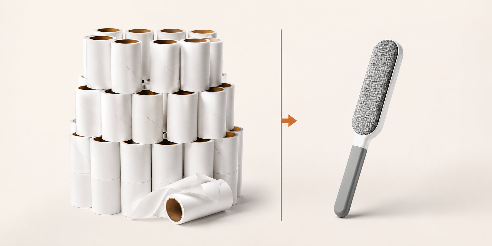
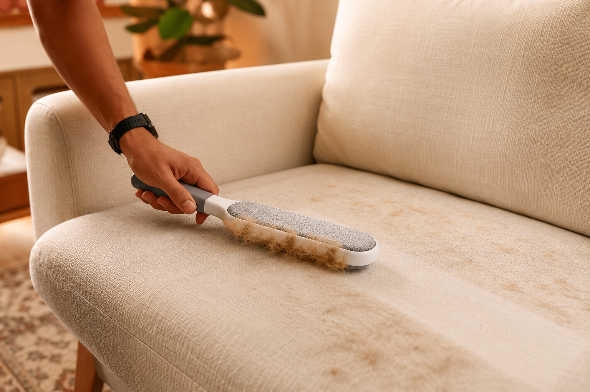
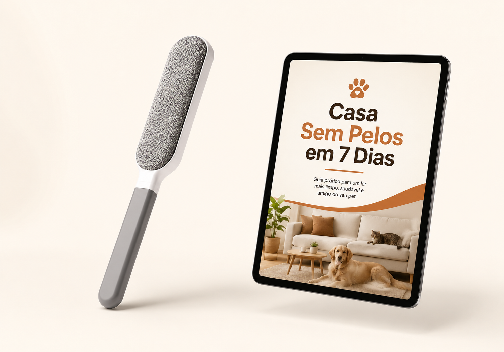

★★★★★
"Melhor do que eu imaginava. Gostei muito! Funciona bem."
— compradora verificada
Casa & Pets
Não é falta de limpeza. Não é culpa do seu bicho. Existe uma razão física para o pelo vencer todas as suas tentativas, e entender essa razão muda a forma de resolver.

Toda tutora conhece a cena. O celular vibra: "chegando em 15 minutos!"
E começa a coreografia que ninguém ensinou mas todo mundo sabe: manta dobrada às pressas para esconder o estado do sofá, rolinho adesivo passado voando nas almofadas, uma olhada no espelho do corredor e... a calça preta. De novo.
Se você tem um gato ou um cachorro em casa, você não precisa que ninguém descreva o resto. A roupa escura que virou item proibido no guarda-roupa. A limpeza que nunca termina, só recomeça.
E em algum momento, alguém já te sugeriu a "solução": não deixa ele subir no sofá.
Como se fosse esse o problema.
O pelo espalhado pela casa não é sinal de desleixo. É a assinatura de um animal que vive solto, dorme perto de você e tem livre acesso ao lugar mais quentinho da sala. Quem tem, sabe: casa com pelo é casa com amor. A ciência inclusive explica: cães e gatos trocam a pelagem em ciclos naturais regulados pela luz do dia, o ano inteiro, com picos nas trocas de estação. Não existe pet saudável que não solte pelo. Nunca existiu.
E você provavelmente já tentou de tudo contra ele. O rolo adesivo que acaba na metade do sofá. O aspirador que passa e o pelo continua lá. A luva de silicone que junta o pelo num canto e ele volta a se espalhar. Cada solução dessas promete o fim do pelo, e todas esbarram no mesmo detalhe que ninguém explica: o pelo não está solto sobre o tecido. Ele está agarrado ao tecido.
O problema, portanto, nunca foi o seu bicho. E também nunca foi o seu esforço.
O problema é que quase tudo que se vende para remover pelos ataca o lugar errado.
Nas fotos, o pet no sofá é fofura. Na vida real, tem um custo silencioso que só quem vive conhece.
É sair de casa arrumada e perceber, já no trabalho, a camada de pelos na roupa escura. É a visita que levanta do sofá discretamente batendo a calça. É o forro do carro depois do passeio de domingo. É aquela vergonha injusta, porque a casa está limpa, você limpou ontem, e mesmo assim o tecido conta outra história.
No inverno, piora: o pet dentro de casa o dia inteiro, as mantas de microfibra, o moletom e a lã, exatamente os tecidos que mais seguram pelo.

Tenho dois goldens e quem tem sabe que o sofá vira um tapete de pelo se deixar.
E aqui vale nomear o que quase nenhuma propaganda de produto de limpeza admite: essa rotina cansa. Não porque falta esforço. Porque o esforço está sendo gasto contra um adversário que ninguém te explicou como funciona.
É isso que a próxima parte resolve.

Pelo de cachorro e de gato é leve, fino e carregado de eletricidade estática. Quando cai num tecido, ele não pousa: ele desliza para dentro da trama e se prende entre as fibras, como uma linha costurada.
É por isso que:
O aspirador falha. Sucção puxa o que está solto na superfície. O pelo entrelaçado na fibra fica exatamente onde estava. Você já viu isso acontecer: passa o aspirador e o sofá continua "acinzentado".
O rolo adesivo falha duas vezes. A cola só alcança a camada superficial, e satura em poucas passadas: numa manta cheia, você gasta várias folhas para limpar um pedaço. E tem o detalhe que o fabricante não imprime na embalagem: a folha vai deixando um resíduo fino de cola no tecido, e superfície pegajosa atrai poeira e pelo novo mais rápido. O rolinho cria trabalho para o próprio rolinho.
A luva de borracha ajunta, não remove. Ela arrasta o pelo superficial para um monte, que você ainda precisa catar, e o tramado continua lá.
Em resumo: você nunca teve um problema de limpeza. Você teve, esse tempo todo, um problema de profundidade. As suas ferramentas trabalham na superfície de um problema que mora dentro da trama.
Um refil de rolo adesivo custa, em média, de R$15 a R$17 na farmácia ou no mercado.
Quem tem pet de muda alta troca um a cada 15 dias, fácil. Tem gente que troca por semana.
Pegue o cenário moderado: 2 refis por mês. São 24 refis por ano. 24 × R$16 = cerca de R$390 por ano. Todo ano. Para sempre. Em folhas de plástico com cola que vão direto para o lixo.

Eu era escrava do rolinho de fita adesiva, gastava uma fortuna por mês comprando refil na farmácia porque tenho 3 gatos.
O rolo adesivo não é barato. Ele é parcelado em infinitas vezes. E a parcela nunca acaba, porque o produto foi desenhado para acabar: é descartável por modelo de negócio, não por necessidade técnica.
Guarde esse número, R$390 por ano. Ele volta daqui a pouco.
Esfregue um balão no cabelo e ele gruda na parede. Tire a roupa da secadora e a meia vem colada na camiseta. Vista uma blusa de lã no tempo seco e sinta o estalo.
Isso é eletricidade estática gerada por atrito. Não precisa de pilha, não precisa de tomada. Precisa só de dois materiais certos se esfregando.
O pelo do seu pet usa exatamente essa força contra você o dia inteiro: é a estática que faz ele voar do chão frio e se prender na sua calça e no seu sofá.
A Escova Duo-Static Pelaria vira esse jogo. As duas faces dela são cobertas por um veludo técnico com milhões de microcerdas inclinadas numa única direção, um velcro microscópico de mão única. Ao deslizar sobre o tecido:
1. As microcerdas entram na trama e pescam o pelo entrelaçado, aquele que o aspirador sobrevoa e a cola não alcança;
2. O atrito do movimento gera a carga estática que prende o pelo na escova em vez de deixá-lo voar de volta;
3. Encheu um lado? Gire o cabo e continue com a outra face. O dobro de área útil antes de parar para esvaziar, e alcance nos cantos onde escova comum não entra: entre almofadas, forro de casaco, vão do banco do carro.
Sem pilha. Sem cola. Sem refil. Sem nada para acabar.
É o que chamamos de Sistema Duo-Static: dupla face ativa + atração eletrostática por atrito.

Repare num detalhe do vídeo acima: quando a escova desliza no sentido contrário ao da seta, ela não pega quase nada. No sentido certo, sai o tufo.
Se isso fosse truque de edição, funcionaria para os dois lados.
É física de mão única: as microcerdas são inclinadas, então só "pescam" numa direção, e é exatamente essa inclinação que depois permite soltar o bloco de pelo inteiro na lixeira com uma passada de dedo no sentido contrário. A limitação e a facilidade de limpeza são o mesmo mecanismo.
E já que estamos sendo honestos, vamos até o fim:
Muito bom! Ele realmente tira os pelos da roupa, mas apenas os pelos, não tira as bolinhas. Mas era para os pelos que eu precisava, então me atendeu muito bem!
Utilizei uma manta na demonstração. Dependendo do tecido, não tira todo pelo. Mas, em roupas finas tipo camisetas e leggings, vale muito a pena.
Preferimos que você saiba disso antes de comprar, e não depois. É assim que se constrói avaliação cinco estrelas: expectativa certa, surpresa boa.
Quem já passou a escova
"Melhor do que eu imaginava. Gostei muito! Funciona bem."
— compradora verificada
"Tudo ok! Tudo como combinado! Só sucesso! Eu indico plenamente a compra… sem medo! Comprem sem medo!!!!!"
— comprador verificado
"Realmente muito bom e prático pra tirar pelos."
— compradora verificada
"Gente, chocado. Meu sofá de suede bege tava cinza de tanto pelo da minha gata. Passou essa escova e parece que o sofá ressuscitou."
— comprador verificado
"cumpre o que promete, recomendo"
— comprador verificado
"muito bom, tamanho ótimo e tira pelos facilmente"
— compradora verificada
Avaliações de compradores do produto.
Viu mesmo. E a gente prefere falar disso a fingir que não existe.
Escovas desse formato são vendidas em sites internacionais por R$10 a R$22. Se o seu único critério for o menor número na tela, esta página não vai te convencer do contrário, e tudo bem.
Mas antes de decidir, vale saber o que muda:
O que você compra lá: um anúncio entre centenas de anúncios idênticos, de fornecedores que você não conhece, com variações de material que você só descobre quando chega. Prazo que costuma passar de 3 semanas, risco de taxação na chegada, e, se vier com defeito, uma disputa por chat com tradução automática.
O que você compra aqui: o modelo específico que a Pelaria pesquisou, comparou com rolos de silicone, luvas e escovas de face única, e selecionou para levar o nome da marca. Com 14 dias de garantia depois que chega, devolução resolvida em português por gente que responde, e o Guia Casa Sem Pelos liberado no seu e-mail minutos depois da compra.
Sobre o prazo, transparência total: a entrega leva de 10 a 17 dias corridos, com frete grátis e código de rastreio. Não vamos te prometer que chega amanhã, porque não chega. O que fazemos é o seguinte: você não espera parada. O guia digital chega na hora, e você começa a atacar o pelo da casa hoje, cômodo por cômodo, com técnicas que funcionam com o que você já tem em casa. Quando a escova chegar, ela encontra a rotina pronta, e assume o trabalho pesado.
| Genérico internacional | Duo-Static Pelaria | |
|---|---|---|
| Preço | R$10 a R$22 (ganha aqui) | R$34,90 no lançamento |
| Qual modelo chega | Loteria entre fornecedores | Modelo selecionado e padronizado pela marca |
| Garantia | Disputa por chat, em inglês | 14 dias após a entrega, em português |
| Se vier com defeito | Você contra o fornecedor | A Pelaria resolve e responde |
| Taxação na chegada | Por sua conta e risco | Preço final é o preço final |
| Começar a resolver hoje | Não | Guia digital imediato no e-mail |
A conta que importa não é R$34,90 contra R$14. É: quanto custa quando dá errado? Lá, deu errado, você perdeu R$14, um mês de espera e a paciência. Aqui, deu errado, você tem 14 dias e alguém do seu lado para resolver.
A oferta de lançamento

no lançamento
Preço de lançamento válido até [DATA REAL DE FIM]. Depois, a Duo-Static passa a valer o preço de tabela de R$57,90.
Agora, a conta prometida lá em cima:
Caminho 1: continuar no rolo adesivo. ~R$390 por ano, para sempre, em plástico com cola que vai pro lixo.
Caminho 2: R$34,90. Uma vez. Sem refil, sem pilha, sem assinatura escondida. Pelo preço de pouco mais de 2 refis, você aposenta a categoria inteira.

Você não vai tirar seu bicho do sofá. Nunca ia. A escolha real sempre foi outra: continuar pagando a assinatura do rolinho e escondendo o sofá com manta, ou resolver o pelo tramado de uma vez, com uma ferramenta que não acaba, não descola e não cobra mensalidade.
O pelo é a assinatura de quem você ama. A Duo-Static só tira ele da sua calça preta.
Escova Duo-Static Pelaria + Guia Casa Sem Pelos em 7 Dias + frete grátis + 14 dias de garantia
até [DATA REAL DE FIM]
Pagamento seguro via Mercado Pago · Rastreio incluso · Entrega em 10 a 17 dias ·
Guia digital imediato · Cupom BEMVINDO10 para primeira compra aplicável no checkout